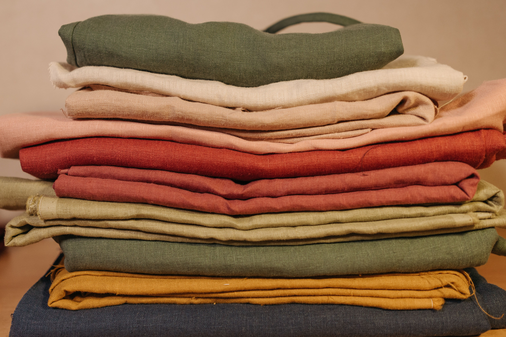

Rediscover the Beauty of Simple Living
Natural living begins with thoughtful choices. From the fabrics we wear to the things we make with our hands, everyday decisions offer opportunities to reconnect with nature and traditional knowledge.
Rooted in Nature, Inspired by Beauty.
Natural living begins with thoughtful choices. From the fabrics we wear to the things we make with our hands, everyday decisions offer opportunities to reconnect with nature and traditional knowledge.

Have you ever stopped to consider how much time your clothing spends against your skin?
From the moment we get dressed until we climb into bed at night, we are surrounded by fabric. Our clothing, bedding, towels, and household textiles are part of our everyday environment.
At Dandelion-Rose, we believe that understanding the materials we use is an important part of thoughtful, natural living.
For thousands of years, people have created clothing from fibers provided by plants and animals.
Cotton is valued for its softness, absorbency, and versatility. It is often a comfortable choice for everyday clothing.
Linen, made from the flax plant, is durable and breathable. Its moisture-absorbing properties and airy construction make it popular for warm-weather clothing and bedding.
Wool provides insulation and moisture management. Fine merino wool can be especially comfortable, while coarser varieties may irritate sensitive skin.
Silk is a natural protein fiber known for its smooth texture, light weight, and beautiful drape.
Our skin responds to heat, moisture, friction, and substances that come into contact with it.
Breathability, softness, moisture management, and garment fit all influence comfort.
Some people experience irritation from textile dyes, finishes, or rough fabrics. Natural fibers may be comfortable choices, but they are not automatically free from chemical treatments or allergens.
Polyester, nylon, acrylic, and elastane are commonly used in modern clothing.
Many synthetic fibers are made from petroleum-derived materials. They can offer durability, stretch, wrinkle resistance, and quick drying.
Some synthetic garments may trap warmth or feel uncomfortable in certain conditions. Others are engineered to manage perspiration effectively.
The way a fabric is woven or knitted can be just as important as the fiber from which it is made.
An interesting topic in natural-living discussions is the idea that different fabrics possess different energetic frequencies.
You may have encountered claims that linen and wool have frequencies of approximately 5,000 Hz, while polyester has a frequency of 15 Hz.
Although these numbers are frequently shared online, they are not established scientific measurements of fabric health effects. Reliable evidence has not demonstrated that wearing a higher-frequency fabric improves human health.
In physics, frequency describes how often a vibration or repeating event occurs. A meaningful measurement must identify what is vibrating and the conditions involved.
Textiles have measurable electrical, thermal, and mechanical properties. These are fascinating subjects, but they should not be confused with a proven scale of healing frequencies.
We can remain curious about new ideas while distinguishing scientific findings from traditional beliefs and claims requiring further research.
Choosing natural fibers does not require replacing everything in your closet.
Begin with small changes. Consider cotton or linen for everyday clothing, wool for comfortable layers, or natural-fiber bedding when it suits your needs.
Read clothing labels. Notice how different fabrics feel against your skin and how comfortable they are in different temperatures.
If you enjoy sewing, take time to appreciate the properties of each fabric before beginning your next project.
Natural living is not about achieving perfection. It is about becoming more aware of our everyday choices.
The fabrics we wear are one beautiful place to begin.
At Dandelion-Rose, we celebrate traditional knowledge, thoughtful choices, and the enduring beauty of nature.